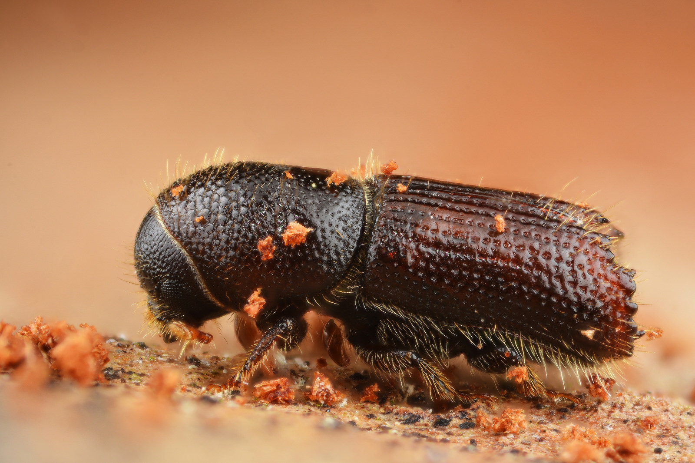

Información básica del insecto
En este apartado puedes obtener toda la información que necesite sobre la familia, género y el ciclo biológico de los escolítidos, especialmente, a los especímenes pertenecientes al género tomicus, ya que el proyecto se centra, principalmente en ellos.
Familia

Fuente:Gilles San Martin via Foter.com / CC BY-SA
Género